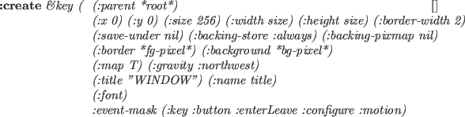

Xobject [クラス]
:super geometry:viewsurface
:slots
-
- すべてのXwindowに関連するクラスの共通のスーパークラスである。
現在、スロットもメソッドも定義されていない。
Xdrawable [クラス]
:super Xobject
:slots (drawable ; drawable ID
gcon ; this drawable's default graphic context object
bg-color ; background color
width height ; horizontal and vertical dimensions in dots
-
- Xdrawableは、線分や文字列のようなグラフィックオブジェクト
を描くための四角領域を定義する。
Xdrawableは、xwindowやxpixmapのための共通メソッド
を定義するための抽象クラスであり、
このクラスのインスタンスは何の効果も持っていない。
:init id [メソッド]
-
-
idは、このdrawableのIDとしてdrawableスロットに設定される。
新しいGC(graphic context)が生成され、このdrawableオブジェクトの
デフォルトGCとしてgconに設定される。
:drawable [メソッド]
-
- drawable IDを返す。
:flush [メソッド]
-
- Xlibのバッファに保有されるコマンドを掃き出す。
:geometry [メソッド]
-
-
7つの幾何学属性のリストを返す。
そのリストは、root-window-id, x座標, y座標,
幅, 高さ, 枠線の幅, visualの深さである。
:height [メソッド]
-
-
このXdrawableの高さ（y軸方向のドット数）を返す。
:width [メソッド]
-
-
このXdrawableの幅（x軸方向のドット数）を返す。
:gc &rest newgc [メソッド]
-
-
もし、newgcが与えられない場合、現在のGCオブジェクトを返す。
もし、newgcがgcontextのインスタンスなら、
このXdrawableのgcに設定する。
そうでなければ、newgcはメッセージとみなされ、
現在のgcに送られる。
:pos [メソッド]
-
-
このXdrawableの位置を示す整数ベクトルを返す。
位置は親windowの相対位置としていつも定義され、
windowマネージャの仲介のもとにルートwindowの直接の子windowとして
生成されたwindowは、ルートwindowの本当の位置に関わらず、環境の
タイトルwindowの固定座標を返す。
:x [メソッド]
-
- このXdrawableの親windowとの相対的な現在のx座標を返す。
:y [メソッド]
-
- このXdrawableの親windowとの相対的な現在のy座標を返す。
:copy-from drw [メソッド]
-
-
drwは、他のdrawableオブジェクト(Xwindowまたはpixmap)である。
drwの内容がこのXdrawableにコピーされる。
Figure:
描画の基本
 |
:point x y &optional (gc gccon) [メソッド]
-
-
 の位置にオプションのgcで点を描く。
の位置にオプションのgcで点を描く。
:line x1 y1 x2 y2 &optional (gc gcon) [メソッド]
-
-
(x1,y1)から(x2,y2)へオプションのgcを用いて
線分を描く。x1, y1, x2, y2は整数でなければならない。
:rectangle x y width height &optional (gc gcon) [メソッド]
-
-
(x,y)を中心としてwidthの幅とheightの高さを持つ
四角形を描く。
:arc x y width height angle1 angle2 &optional (gc gcon) [メソッド]
-
-
(x,y)を中心としてwidthの幅とheightの高さを持つ
四角形に内接する楕円の円弧を描く。angle1が始まりの角度を示し、
angle2が終わりの角度を示す。これらの角度の単位はラジアンである。
:fill-rectangle x y width height &optional (gc gcon) [メソッド]
-
-
四角領域を埋める。
:fill-arc x y width height angle1 angle2 &optional (gc gcon) [メソッド]
-
-
円弧の中を埋める。
:string x y str &optional (gc gcon) [メソッド]
-
-
(x,y)の位置から文字列strを表示する。背景は、書かない。
:image-string x y str &optional (gc gcon) [メソッド]
-
-
文字列strを表示する。文字列は、背景色で満たされる。
:getimage &key :x :y :width :height (:mask #ffffffff) (:format 2) [メソッド]
-
-
serverからximageを取り、ピクセルデータを文字列として返す。
serverから送られるピクセルデータは、一端 Xlibのximage構造に蓄積される。
その後、行毎に文字列にコピーされる。
ximage構造は、自動的に破壊される。
:getimageにより得られた画像文字列は、pixel-imageを作るために
使用できる。また、18.6節に書かれているようにpbmフォーマットのファイルに
書き込むことができる。
:putimage image &key :src-x :src-y :dst-x :dst-y :width :height ((:gc g) gc) [メソッド]
-
-
このXdrawableの指定された位置にimageを表示する。
imageは、文字列あるいはximage構造へのアドレスポインターである。
:draw-line from to [メソッド]
-
-
:lineメソッドと同じである。
他のviewsurfaceクラスとの互換性を提供できる。
:line-width &optional dots [メソッド]
-
-
このXdrawableのデフォルトGCの線の幅を設定する。
:gc :line-widthメッセージの使用を推薦する。
:line-style &optional dash [メソッド]
-
-
このXdrawableのデフォルトGCの線スタイルを設定する。
:gc :line-styleの使用が好まれる。
:color &optional c [メソッド]
-
- このXdrawableの色を設定する。
:clear [メソッド]
-
-
全画面を消去する。この関数は、:clear-areaを呼び出す。
:clear-area &key :x :y :width :height :gc [メソッド]
-
-
:fill-rectangleメソッドを用いて四角領域を消去する。
Xpixmap [クラス]
:super Xdrawable
:slots
-
- pixmapは、画像バッファあるいは背景のパターンとしてしばしば用いられる
drawableである。xwindowと異なり、xwindowにコピーされるまで
pixmap自身を見ることはできないし、pixmapはどんなイベントも発生しない。
:init id [メソッド]
-
- このpixmapを初期化する。
:create &key (:width 500) (:height 500) (:depth 1) (:gc *defaultgc*) [メソッド]
-
-
デフォルトGCとして:gcを持つ、width
 heightのpixmapを作成する。
heightのpixmapを作成する。
:create-from-bitmap-file fname [メソッド]
-
-
fileで指定されるbitmapファイルからpixmapを作る。
:write-to-bitmap-file fname [メソッド]
-
-
このpixmapの内容をfnameで指定されるbitmapファイルに書き込む。
このファイルは、:create-from-bitmap-fileメソッドで
pixmapを作り、読み戻すことができる。
:destroy [メソッド]
-
-
このpixmapを破壊し、X resourceを開放する。
Xwindow [クラス]
:super Xdrawable
:slots (parent subwindows backing-store)
-
- Xwindowは、画面の見える四角領域を定義する。
これは、text-windowやグラフィックオブジェクトを描くためのcanvas
だけでなく、windowというよりはむしろグラフィックオブジェクトのような
たくさんのpanel-itemやscroll-barsからも継承される。

-
- xwindow生成し、初期化する。
:parentが与えられたとき、このwindowは:parentの子windowとして
生成され、:parentのsubwindowsリストに蓄積される。
:x, :y, :size, :width, :heightと:border-widthは、このwindow
の位置と寸法を決定する。
:save-underと:backing-storeは、windowが再マップされたときに
生じるXserverの行動を制御する。
:backing-storeは:notUseful, :WhenMapped, :Alwaysのどれかであるが、
:save-underはTあるいはNILである。
:backing-pixmapがTのとき、このwindowと同じサイズのpixmapがEuslispにより
生成され、もしXserverがbacking-storeの容量を持っていない場合は、
backing-storeとして蓄積される。
:borderと:backgroundは、border_pixelと
background_pixel属性をそれぞれ指定する。
もし、panelの中のpanel-buttonとしてたくさんの小さなwindowを
作成するような場合で、このwindowが生成後にすぐ表示されるべきでないならば、
:mapはNILにセットされなければならない。
:titleは、windowのタイトルバーに現れるwindowのタイトルである。
:nameは、このwindowのplistに蓄積されるwindowの名前であり、
プリンタにより表示される名前である。
このwindowへのXのイベントは、:event-maskによって決定される。
それはビットで構成されるevent-maskの整数表現あるいは次のsymbolのリスト
である。
:key, :button, :enterLeave, :motionと:configure。
もし、もっと正確な制御が必要ならば、次のsymbolをそれぞれのイベントに
指定することができる。:keyPress, :keyRelease, :ButtonPress, :ButtonRelease,
:EnterWindow, :LeaveWindow, :PointerMotion, :PointerMotionHint,
:ButtonMotion, :KeyMapState,
:Exposure, :VisibilityChange,
:StructureNotify,
:ResezeRedirect, :SubstructureNotify,
:SubstructureRedirect, :FocusChange, :PropertyChange, :ColormapChangeと
:OwnerGrabButton。
:keyは、:keyPressと:KeyReleaseの両方が指定でき、
:buttonは、:ButtonPressと:ButtonReleaseの両方が指定できる。
サーバからイベントが送られてきたとき、window-main-loopは、
そのイベント構造を解析し、:KeyPress, :KeyRelease, :buttonPress, :ButtonRelease, :EnterNotify, :LeaveNotify, :MotionNotify, :ConfigureNotify
メッセージをそのイベントが発生したwindowに送る。
:map [メソッド]
-
- このXwindowとその子windowを全て表示する。
:unmap [メソッド]
-
- このXwindowをとその子windowを全て非表示にする。
:selectinput event-mask [メソッド]
-
-
event-maskは、整数かあるいはイベントマスクsymbolのリストである。
ビットが１となっているかあるいはevent-maskリスト
に列挙されているイベントは、それぞれこのwindowに通知される。
:destroy [メソッド]
-
- このXwindowを破壊し、X resourceを開放する。
windowオブジェクトは、ガーベージコレクトされないため、
*xwindow*や*xwindow-hash-tab*の中の一致するエントリも削除される。
全ての子windowも:destroyを送ることにより削除する。
このwindowは、親windowの子windowのリストから削除される。
drawableIDは、NILに設定される。
:parent [メソッド]
-
- 親windowオブジェクトを返す。
:subwindows [メソッド]
-
-
全ての子windowのリストを返す。
子windowは、もっとも最近作られたものがリストの最初である。
このwindowの直接の子windowだけがリストされ、子windowの子windowは
リストされない。
:associate child [メソッド]
-
-
このwindowの子windowとしてchild windowを登録する。
:dissociate child [メソッド]
-
-
子windowのリストからchild windowを削除する。
:title title [メソッド]
-
-
このwindowのタイトル名を変更する。そのタイトル名はXserverに送られるため、
一旦蓄積され、window managerによって表示される。
:attributes [メソッド]
-
- このwindowの属性を表現する整数ベクトルを返す。
:visual [メソッド]
-
- このXwindowのvisual resource IDを返す。
:screen [メソッド]
-
- このXwindowのscreen resource IDを返す。
:root [メソッド]
-
- root window IDを返す。
:location [メソッド]
-
-
このwindowのxとy座標を記述する2次元の整数ベクトルを返す。
:depth [メソッド]
-
-
このwindowの深さ(カラープレーンの数)を返す。
:size [メソッド]
-
- このwindowのサイズ(高さと幅)を返す。
:colormap [メソッド]
-
- このwindowのcolormap resource IDを返す。
:move newx newy [メソッド]
-
-
このwindowの位置を(newx,newy)に変更する。
位置は、親windowの相対位置で与えられる。
:resize width height [メソッド]
-
-
このwindowのサイズを変更する。
たぶん、大きさのパラメータがクライアント側のXlibに中にキャッシュされるため、
:resizeの直後に:geometryメッセージを
送ると誤った（古い）結果を返す。
:raise [メソッド]
-
- このwindowを前面に持ってくる。
:lower [メソッド]
-
- このwindowを後ろに置く。
:background pixel [メソッド]
-
-
背景のピクセル値（カラーマップのインデックス）をpixelに変更する。
pixel値は、bg-colorスロットにも保存される。
:clear処理は、現在の背景を指定されたpixelで埋める。
:background-pixmap pixmap [メソッド]
-
-
背景のpixmap値をpixmapに変更する。
:border pixel [メソッド]
-
-
このwindowの枠線の色をpixelに設定する。
:set-colormap cmap [メソッド]
-
- colormapを設定する。
:clear [メソッド]
-
-
このXwindow内を全て消去する。
:clear-area &key :x :y :width :height [メソッド]
-
-
このXwindowの指定された四角領域を消去する。
make-xwindow &rest args [関数]
-
-
引き数argsで示されるXwindowを作る。
init-xwindow &optional (display (getenv "DISPLAY")) [関数]
-
-
eusxが起動するときに最初に呼び出される関数である。
init-xwindowは、displayで指定されるXserverに接続し、
16.1節に記述されているデフォルト変数を初期化する。
init-xwindowは、デフォルトフォントをロードし、
グローバル変数に設定する。例えば、font-courb12, lucidasans-bold-12など。
このフォントロードは、起動時に時間遅れを引き起こす。
フォントロードの数を減らしたり、ワイルドカード文字"*"を使用せずに
正確なフォント名を指定することにより、その遅れを短くできる。
2016-03-23